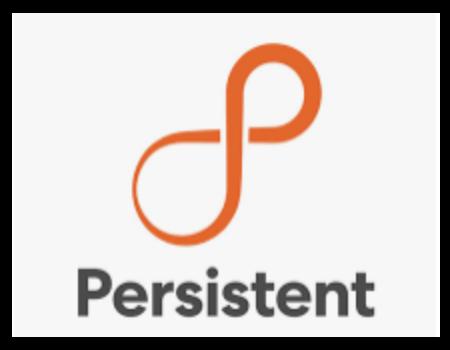

I'm Neelam Borse.
Graduate Student - Illinois Institute Of Technology.

Introduction:
I'm currently a Masters Student pursuing my majors in Information Technology and Management at Illinois Institute of Technology expected to graduate in May 2024. With undergraduate degree in Computer Engineering from Pune University. I have good programming experience in Python, C++, data structure and OOP. Proficient working experience in JavaScript, ReactJS, and a few other Front-end frameworks. I can learn and work with any other web frameworks as well, as per requirements. Passionate individual, curious to solve real-time problems by creating software products as a solution, interested to work in developing cutting edge applications by learning and implementing various computing technologies in Web and Data Science.
Skills:
Languages: C#, Python, R, C/C++, Java, PHP, JavaScript, HTML5, CSS3.
Databases: SQL, MySQL, NoSQL, PostgreSQL, Oracle, MongoDB.
Cloud & CI/CD: AWS (SNS, EC2, S3, Lambda), GitHub, JIRA, Docker, Kubernetes.
Frameworks/Tools: .Net, .NetCore, NodeJS, Entity Framework, Eclipse, Visual Studio, VSCode, GIT, PyCharm, Selenium, Postman, Tableau, Angular, React, AngularJS, Springboot.
Experience:
Illinois Institute of Technology - Graduate Student Assistant
- Assisted graduate faculty members in their duties, managed projects related to Salesforce implementation or enhancement, which may involve creating project plans, tracking progress.
- Guided upcoming graduate student, leading discussions, also managed data in Salesforce, including data entry, data cleaning, data migration, and data validation.
- Created a vision map and function as a point of contact between the admitted students’ network and IIT.
Mphasis - Technical Associate
- Created and executed software solutions that seamlessly incorporated databases, APIs for efficient integration.
- Implemented dynamic filters in entity framework to achieve multitenancy. Worked on fine tuning performance of stored procedures and improved the performance by 50%.
- Ensured test coverage by writing unit test cases, end to end automation test cases, api tests using selenium framework.
- Collaborated with cross functional teams and departments for process improvement.
 Persistent Systems - Project Intern
- Created a generalized system having extensive features to host hackathons catering to both the public & private sectors.
- Automated tedious tasks and design innovative solutions, resulting in a significant reduction of manual work required in hosting hackathons.
- Provided an entity service for managing participants using customized menus.